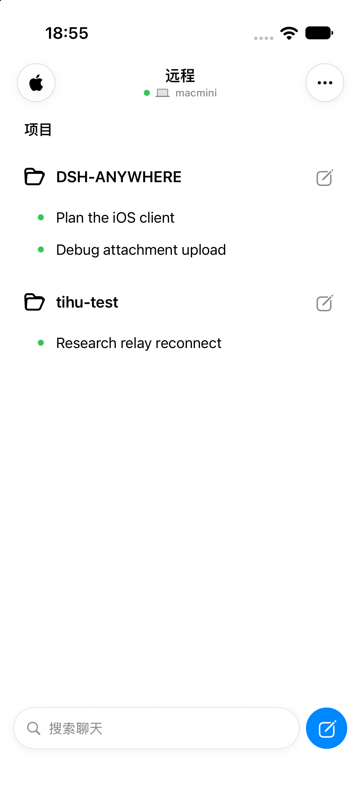
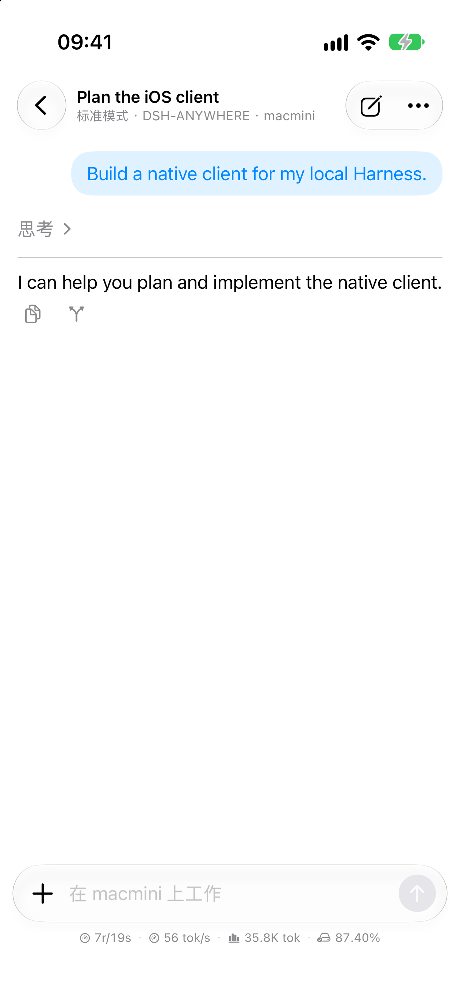
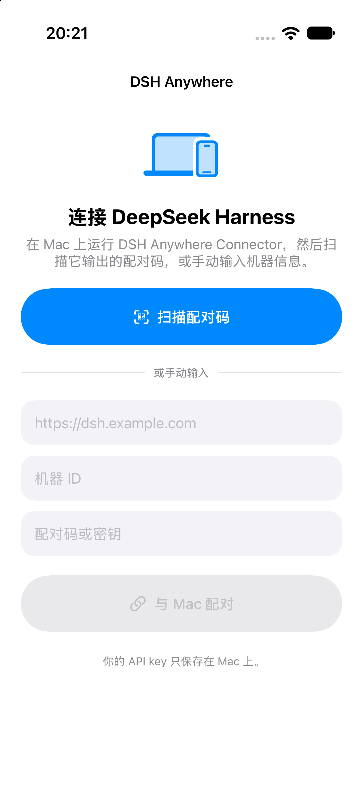

会话随身可看
按工作区浏览、打开或新建会话。长回复、Markdown 和代码块在手机上清晰呈现。
在 iPhone 上查看电脑会话、发送任务、跟进实时回复。Harness 继续运行在你自己的 Mac、Linux 或 Windows 电脑上。

电脑主动连接 Relay。手机和电脑不必处在同一个网络，也不需要把 Harness 服务端口开放到公网。
熟悉的 Harness 会话，配上适合 iPhone 的原生操作。
按工作区浏览、打开或新建会话。长回复、Markdown 和代码块在手机上清晰呈现。
查看流式回复和工具活动，知道任务正在做什么。
收到 Harness 提问，或需要确认操作时，直接在手机上处理。
从照片、相机或文件中添加图片和附件，继续当前工作流。
会话、回复与连接设置，都可以在手机上完成。


界面截图来自 iOS 客户端；对话页用量数字为演示数据，系统状态栏和颜色会随设备设置变化。
准备一台运行 DeepSeek Harness 的电脑和一部 iPhone。
在运行 Harness 的电脑上执行对应系统的安装命令。
在 iPhone 中打开扫码功能，扫描电脑终端显示的二维码。
打开工作区，继续已有会话或创建新会话。
curl -fsSL https://dsh.biaozhu.me/install | shcurl -fsSL https://dsh.biaozhu.me/install-linux | shirm https://dsh.biaozhu.me/install-windows | iex配对二维码 10 分钟后过期，且只能使用一次。之后添加另一台电脑时，再次运行对应的安装命令即可。
Connector 通过 HTTPS/WSS 主动连接 Relay。手机经 Relay 转发请求，不需要给电脑设置公网 IP 或端口映射。
HTTPS/WSS 会加密传输链路。当前协议尚未提供端到端加密；Relay 在转发消息时能够读取业务内容，但不会主动持久化会话正文。项目目前适合个人使用和受控测试。
查看源码与完整安全说明 ↗通过 TestFlight 加入 DSH Anywhere 测试。
加入 TestFlight